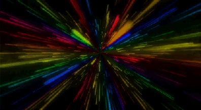

Home
Activate Starships Star Drive
Re-Enter Sector
Re-Enter Star System
Your browser does not support the HTML5 canvas tag. Please upgrade to a version with full support for HTML5.
Your browser does not support the HTML5 canvas tag. Please upgrade to a version with full support for HTML5.
Your browser does not support the HTML5 canvas tag. Please upgrade to a version with full support for HTML5.
